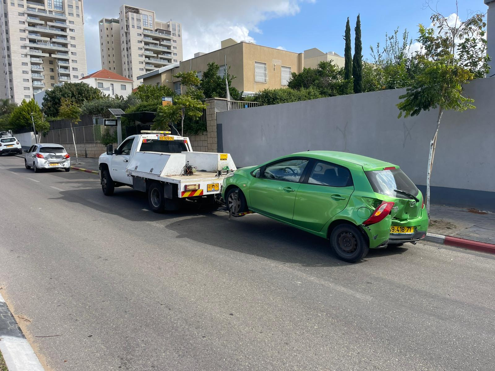

אזורי שירות
איפה אנחנו עובדים?
גרר דולי מתמקד בעיקר בגרירות עירוניות מדויקות עם דולי — לרכב חשמלי, AWD/4x4, רכב נמוך וחילוץ מחניונים. בחר עיר כדי לקבל מידע ממוקד, או פנה אלינו ישירות לבדיקה מהירה.

אזורי כיסוי עיקריים
כרגע האתר כולל דפי עיר ראשונים. בהמשך נוכל להרחיב גם לדפי אזור מלאים, אבל רק כשיהיה לזה צורך אמיתי.
גרירות עירוניות מדויקות, רכבים נמוכים וחילוץ ממקומות צפופים.
שכונות צפופות, חניונים תת-קרקעיים, גישה מורכבת ושינוע קצר.
שינוע עדין למוסך, טעינה, בית או יעד שירות קרוב.
התאמה לפי תנאי שטח, זוויות גישה ומרחב תמרון בפועל.
העברות קצרות, טיפול מסודר ומיקוד במניעת נזקים מיותרים.
דפי ערים זמינים כרגע
כל דף עיר בנוי עם כותרות, דגשים ושאלות מעט שונות — כדי לשמור על תוכן שימושי ולא תבניתי.
לא רואה כאן עדיין את העיר שלך? אפשר ליצור קשר ולקבל בדיקה מהירה. בהמשך נוסיף דפי עיר נוספים לפי אזורי ביקוש אמיתיים.